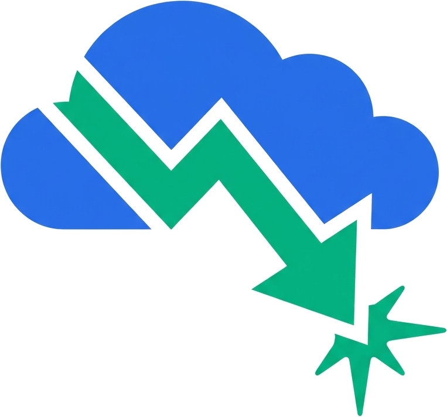

An open-source AI agent skill that finds cloud savings using each provider's own recommendation engines — right inside Claude Code, Cursor, or Gemini. No dashboard. No data ingestion. Free.
Most cost platforms are a paid wrapper around recommendations your cloud already computes for free — plus weeks of onboarding, a cross-account IAM read role, and a dashboard your engineers never open. The savings are sitting in native APIs right now. You just need something to read them and rank them where you already work.
Runs locally on your existing CLI credentials. No cross-account read role to grant, no 24-hour sync, no billing data leaving your environment.
Queries Cost Explorer, Compute Optimizer, GCP Recommender and Azure Advisor directly — so no third-party cost miscalculation or custom-discount drift.
One prompt in Claude Code, Cursor or Gemini. No context-switch to a portal — the insights come to the tool you already have open.
Output ranked by estimated savings and effort, with the exact next command — not a wall of line-items to triage yourself.
AWS, GCP and Azure in a single audit flow — no three separate tools, no consultant, no normalization project.
Audits never mutate infrastructure. Any change is quoted back to you and requires explicit approval before it runs.
npx skills add dautovri/cloud-cost-agent — or add it as a Claude Code plugin. No account, no signup.
You're already logged in: aws, gcloud, az. The skill uses those credentials — nothing new to provision.
"Find quick wins on AWS and GCP." Get a ranked savings report with the next command for each item.
you ▸ audit AWS & GCP, last 30 days, quick wins only # pulling Cost Optimization Hub (us-east-1) + GCP Recommender… Provider: AWS potential savings ~$1,910/mo ▸ 3× idle EBS volumes (gp2, unattached) $240/mo VeryLow ▸ Rightsize m5.2xlarge → m5.large (i-0a3f) $520/mo Low ▸ Compute Savings Plan, 1yr no-upfront $1,150/mo Low Provider: GCP potential savings ~$430/mo ▸ Idle VM in us-central1-a (stop/delete) $180/mo VeryLow ▸ n1-standard-8 → n2-standard-4 $250/mo Low # next: aws compute-optimizer get-ebs-volume-recommendations
This is a wedge, not a category-kill. Here's the straight tradeoff so you can decide.
| Capability | cloud-cost-agent | FinOps SaaS |
|---|---|---|
| Native rightsizing & idle recommendations | Yes | Yes |
| Cross-cloud audit in one flow | Yes | Yes |
| Setup time | Minutes | Days–weeks |
| Data ingestion / IAM read role | None | Required |
| Cost | Free / OSS | $$ / % of spend |
| Continuous monitoring & anomaly alerts | No | Yes |
| Historical trends & baselines | No | Yes |
| Allocation / showback / chargeback | No | Yes |
| Executive / finance dashboards | No | Yes |
If that's you, keep Vantage, CloudZero, or similar — they do a different job, well.
A fast, native, cross-cloud savings audit inside the agent you already use.
Then authenticate your clouds (aws sso login / gcloud auth login / az login) and ask your agent for an audit.
Install the skill, point it at your clouds, and get a ranked savings list in minutes.